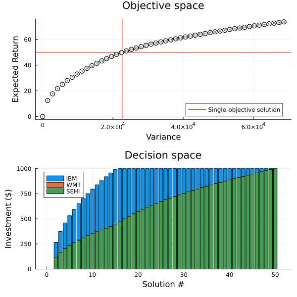

Example: portfolio optimization
This tutorial was generated using Literate.jl. Download the source as a .jl file.
This tutorial was originally contributed by Arpit Bhatia.
This tutorial solves the Markowitz mean-variance portfolio optimization problem using quadratic programming in JuMP, then extends it to a bi-objective problem to compute the efficient frontier. Data is from lecture notes by Shabbir Ahmed at Georgia Tech.
Learning intentions:
- Formulate the Markowitz mean-variance model as a quadratic program that minimises portfolio variance for a given minimum expected return
- Turn the single-objective model into a bi-objective problem and use MultiObjectiveAlgorithms.jl to approximate the efficient frontier
- Interpret the resulting trade-off by plotting both the objective space (risk vs return) and the allocation space
Required packages
This tutorial uses the following packages:
using JuMPimport DataFramesimport Ipoptimport MultiObjectiveAlgorithms as MOAimport Plotsimport Statisticsimport StatsPlotsFormulation
Suppose we are considering investing 1000 dollars in three non-dividend paying stocks, IBM (IBM), Walmart (WMT), and Southern Electric (SEHI), for a one-month period.
We will use the initial money to buy shares of the three stocks at the current market prices, hold these for one month, and sell the shares off at the prevailing market prices at the end of the month.
As a rational investor, we hope to make some profit out of this endeavor, that is, the return on our investment should be positive.
Suppose we bought a stock at $p$ dollars per share in the beginning of the month, and sold it off at $s$ dollars per share at the end of the month. Then the one-month return on a share of the stock is $\frac{s-p}{p}$.
Since the stock prices are quite uncertain, so is the end-of-month return on our investment. Our goal is to invest in such a way that the expected end-of-month return is at least $50 or 5%. Furthermore, we want to make sure that the “risk” of not achieving our desired return is minimum.
Note that we are solving the problem under the following assumptions:
- We can trade any continuum of shares.
- No short-selling is allowed.
- There are no transaction costs.
We model this problem by taking decision variables $x_{i}, i=1,2,3,$ denoting the dollars invested in each of the 3 stocks.
Let us denote by $\tilde{r}_{i}$ the random variable corresponding to the monthly return (increase in the stock price) per dollar for stock $i$.
Then, the return (or profit) on $x_{i}$ dollars invested in stock $i$ is $\tilde{r}_{i} x_{i},$ and the total (random) return on our investment is $\sum_{i=1}^{3} \tilde{r}_{i} x_{i}.$ The expected return on our investment is then $\mathbb{E}\left[\sum_{i=1}^{3} \tilde{r}_{i} x_{i}\right]=\sum_{i=1}^{3} \overline{r}_{i} x_{i},$ where $\overline{r}_{i}$ is the expected value of the $\tilde{r}_{i}.$
Now we need to quantify the notion of “risk” in our investment.
Markowitz, in his Nobel prize winning work, showed that a rational investor’s notion of minimizing risk can be closely approximated by minimizing the variance of the return of the investment portfolio. This variance is given by:
\[\operatorname{Var}\left[\sum_{i=1}^{3} \tilde{r}_{i} x_{i}\right] = \sum_{i=1}^{3} \sum_{j=1}^{3} x_{i} x_{j} \sigma_{i j}\]
where $\sigma_{i j}$ is the covariance of the return of stock $i$ with stock $j$.
Note that the right hand side of the equation is the most reduced form of the expression and we have not shown the intermediate steps involved in getting to this form. We can also write this equation as:
\[\operatorname{Var}\left[\sum_{i=1}^{3} \tilde{r}_{i} x_{i}\right] =x^\top Q x\]
Where $Q$ is the covariance matrix for the random vector $\tilde{r}$.
Finally, we can write the model as:
\[\begin{aligned} \min x^\top Q x \\ \text { s.t. } \sum_{i=1}^{3} x_{i} \leq 1000 \\ \overline{r}^\top x \geq 50 \\ x \geq 0 \end{aligned}\]
Data
For the data in our problem, we use the stock prices given below, in monthly values from November 2000, through November 2001.
df = DataFrames.DataFrame( [ 93.043 51.826 1.063 84.585 52.823 0.938 111.453 56.477 1.000 99.525 49.805 0.938 95.819 50.287 1.438 114.708 51.521 1.700 111.515 51.531 2.540 113.211 48.664 2.390 104.942 55.744 3.120 99.827 47.916 2.980 91.607 49.438 1.900 107.937 51.336 1.750 115.590 55.081 1.800 ], [:IBM, :WMT, :SEHI],)| Row | IBM | WMT | SEHI |
|---|---|---|---|
| Float64 | Float64 | Float64 | |
| 1 | 93.043 | 51.826 | 1.063 |
| 2 | 84.585 | 52.823 | 0.938 |
| 3 | 111.453 | 56.477 | 1.0 |
| 4 | 99.525 | 49.805 | 0.938 |
| 5 | 95.819 | 50.287 | 1.438 |
| 6 | 114.708 | 51.521 | 1.7 |
| 7 | 111.515 | 51.531 | 2.54 |
| 8 | 113.211 | 48.664 | 2.39 |
| 9 | 104.942 | 55.744 | 3.12 |
| 10 | 99.827 | 47.916 | 2.98 |
| 11 | 91.607 | 49.438 | 1.9 |
| 12 | 107.937 | 51.336 | 1.75 |
| 13 | 115.59 | 55.081 | 1.8 |
Next, we compute the percentage return for the stock in each month:
returns = diff(Matrix(df); dims = 1) ./ Matrix(df[1:(end-1), :])12×3 Matrix{Float64}:
-0.0909042 0.0192374 -0.117592
0.317645 0.0691744 0.0660981
-0.107023 -0.118137 -0.062
-0.0372369 0.00967774 0.533049
0.197132 0.0245391 0.182197
-0.0278359 0.000194096 0.494118
0.0152087 -0.0556364 -0.0590551
-0.0730406 0.145487 0.305439
-0.0487412 -0.140428 -0.0448718
-0.0823425 0.0317639 -0.362416
0.178261 0.0383915 -0.0789474
0.0709025 0.0729508 0.0285714The expected monthly return is:
r = vec(Statistics.mean(returns; dims = 1))3-element Vector{Float64}:
0.026002150277777348
0.008101316405671459
0.07371590949198982and the covariance matrix is:
Q = Statistics.cov(returns)3×3 Matrix{Float64}:
0.018641 0.00359853 0.00130976
0.00359853 0.00643694 0.00488727
0.00130976 0.00488727 0.0686828JuMP formulation
model = Model(Ipopt.Optimizer)set_silent(model)@variable(model, x[1:3] >= 0)@objective(model, Min, x' * Q * x)@constraint(model, sum(x) <= 1000)@constraint(model, r' * x >= 50)optimize!(model)assert_is_solved_and_feasible(model)solution_summary(model)solution_summary(; result = 1, verbose = false)
├ solver_name : Ipopt
├ Termination
│ ├ termination_status : LOCALLY_SOLVED
│ ├ result_count : 1
│ └ raw_status : Solve_Succeeded
├ Solution (result = 1)
│ ├ primal_status : FEASIBLE_POINT
│ ├ dual_status : FEASIBLE_POINT
│ ├ objective_value : 2.26344e+04
│ └ dual_objective_value : 4.52688e+04
└ Work counters
├ solve_time (sec) : 3.24106e-03
└ barrier_iterations : 11The optimal allocation of our assets is:
value.(x)3-element Vector{Float64}:
497.045529849864
-9.670578501816873e-9
502.9544801594809So we spend $497 on IBM, and $503 on SEHI. This results in a variance of:
scalar_variance = value(x' * Q * x)22634.417849884147and an expected return of:
scalar_return = value(r' * x)49.999999500002374Multi-objective portfolio optimization
The previous model returned a single solution that minimized the variance, ensuring that our expected return was at least $50. In practice, we might be willing to accept a slightly higher variance if it meant a much increased expected return. To explore this problem space, we can instead formulate our portfolio optimization problem with two objectives:
- to minimize the variance
- to maximize the expected return
The solution to this bi-objective problem is the efficient frontier of modern portfolio theory, and each point in the solution is a point with the best return for a fixed level of risk.
model = Model(() -> MOA.Optimizer(Ipopt.Optimizer))set_silent(model)We also need to choose a solution algorithm for MOA. For our problem, the efficient frontier will have an infinite number of solutions. Since we cannot find all of the solutions, we choose an approximation algorithm and limit the number of solution points that are returned:
set_optimizer_attribute(model, MOA.Algorithm(), MOA.EpsilonConstraint())set_optimizer_attribute(model, MOA.SolutionLimit(), 50)Now we can define the rest of the model:
@variable(model, x[1:3] >= 0)@constraint(model, sum(x) <= 1000)@expression(model, variance, x' * Q * x)@expression(model, expected_return, r' * x)# We want to minimize variance and maximize expected return, but we must pick# a single objective sense `Min`, and negate any `Max` objectives:@objective(model, Min, [variance, -expected_return])optimize!(model)assert_is_solved_and_feasible(model)solution_summary(model)solution_summary(; result = 1, verbose = false)
├ solver_name : MOA[algorithm=MultiObjectiveAlgorithms.EpsilonConstraint, optimizer=Ipopt]
├ Termination
│ ├ termination_status : OPTIMAL
│ ├ result_count : 50
│ ├ raw_status : Solve complete. Found 50 solution(s)
│ └ objective_bound : [1.57816e-08,-7.37159e+01]
├ Solution (result = 1)
│ ├ primal_status : FEASIBLE_POINT
│ ├ dual_status : NO_SOLUTION
│ └ objective_value : [1.57816e-08,-4.19663e-05]
└ Work counters
└ solve_time (sec) : 2.18841e+00The algorithm found 50 different solutions. Let's plot them to see how they differ:
objective_space = Plots.hline( [scalar_return]; label = "Single-objective solution", linecolor = :red,)Plots.vline!(objective_space, [scalar_variance]; label = "", linecolor = :red)Plots.scatter!( objective_space, [value(variance; result = i) for i in 1:result_count(model)], [value(expected_return; result = i) for i in 1:result_count(model)]; xlabel = "Variance", ylabel = "Expected Return", label = "", title = "Objective space", markercolor = "white", markersize = 5, legend = :bottomright,)for i in 1:result_count(model) y = objective_value(model; result = i) Plots.annotate!(objective_space, y[1], -y[2], (i, 3))enddecision_space = StatsPlots.groupedbar( vcat([value.(x; result = i)' for i in 1:result_count(model)]...); bar_position = :stack, label = ["IBM" "WMT" "SEHI"], xlabel = "Solution #", ylabel = "Investment (\$)", title = "Decision space",)Plots.plot(objective_space, decision_space; layout = (2, 1), size = (600, 600))
Perhaps our trade-off wasn't so bad after all. Our original solution corresponded to picking a solution #17. If we buy more SEHI, we can increase the return, but the variance also increases. If we buy less SEHI, such as a solution like #5 or #6, then we can achieve the corresponding return without deploying all of our capital. We should also note that at no point should we buy WMT.